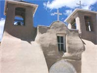

Commonly used as a protective finish over exterior walls, plasters also offer durability and beauty for interiors. But choosing the right plaster is not just a matter of aesthetics: The very lifespan of your home can depend on your choices. Today's homeowner has many varieties from which to choose: natural plasters of earth, lime or gypsum, and stuccos of cement or synthetic materials.
Knowing the characteristics of the wide array of plasters in use today, and the pros and cons of each, will help you make the correct choice for your home.
Plasters and stuccos usually consist of three basics: a structural component, a binding agent and some sort of fiber. Sand provides most of the volume of a plaster and serves as the structural component of all plasters and stuccos except gypsum plaster. Depending on the mixture, sand also can lend texture to the plaster.
When water is added to a plaster or stucco mix, binding agents - such as lime, gypsum or cement - cause the sand particles to adhere to each another, creating a pliable, cohesive material that spreads smoothly and bonds onto walls. As the water evaporates, plasters and stuccos set, or cure, and the binding agents create a hard, protective finish.
Fibers frequently are added to increase the plaster's strength, provide reinforcement and reduce or eliminate cracking. Straw, cattails and wool are used in earth plasters; fiberglass is added to cement stucco. In days gone by, horse hair was added to a gypsum plaster base coat.
Plasters and stuccos are spread by hand or trowel, or sprayed on with a mechanical sprayer or pump. Instead of one thick layer, several thin coats are applied to reduce slumping, which may cause plaster to detach from a wall. Thin-layer application also reduces cracking as plasters and stuccos dry. When cured, plasters and stuccos produce a fairly fireproof layer, covering combustible materials in the walls' interiors.
Plaster can provide a smooth or textured finish depending on the plaster and application method. With its small imperfections and ability to be molded around corners and niches, earthen plaster can lend a warm, rustic feel to a home or "create smooth walls with even curves and a polish so fine it feels like glass tossed up from an ocean beach," says Keely Meagan, author of Earth Plasters for Straw Bale Homes. Gypsum plasters and stuccos can take on a multitude of textures as well. Compared to earthen plasters, achieving a uniform finish for gypsum and stuccos generally requires less work.
Controlling the movement of water vapor into and out of a house is one problem that perpetually plagues builders. Not only do builders strive to prevent water vapor from coming in, they also need to find ways to let it out if it gets in.
Water vapor moves from warm to cold: from a warm interior wall to a cold exterior wall, for example. Great differences in temperature cause vapor to condense into liquid water on the cold surfaces. Where moisture accumulates, building materials can be at risk for deterioration: Wood rots, straw molds, metal rusts and plaster erodes.
Although the overall goal is to keep building assemblies from getting wet, and allowing them to dry if they do get wet, different climates call for different vapor-barrier strategies. For specific recommendations for your climate, the Energy Efficient Building Association publishes climate-specific Builder's Guides ($40 each; available through their Web site at www.eeba.org ), which offer good vapor-barrier design methods.
Before building a conventional home, chat with local contractors to find out what works for them. If you're building a straw bale, cob or adobe home, you'll have to design your overhangs and foundation well, but the materials (straw bales, earthen plaster) used in these construction styles are permeable to water vapor and will allow your house to release water vapor freely.
Earthen plasters are the most ancient of all plasters and continue to be used in many parts of the world today. Here in the United States they find a receptive audience among many natural builders, who are making homes out of straw bales and earthen materials, such as adobe, rammed earth and cob (see "Building with Earth," April/May 2002).
Earthen plasters require some experimentation. Unlike other wall finishes, such as gypsum plaster, earthen plasters are not sold in ready-mix powders, except in Germany, where they are available in bags from building supply outlets. Earthen plasters must be made from scratch: dirt, often with a little sand, straw and cooked flour paste (hardener) or manure added to create a more durable finish that won't shed sand or fine clay particles. In most locales, earthen plasters are made from subsoil containing a mixture of clay, sand and silt. The subsoil in some regions is perfectly suited for earthen plaster. In other areas, the subsoil may need to be amended with additional sand or clay to create a workable mix. Most mudders experiment with various mixtures to see which ones are easiest to apply and adhere well, and determine which mixtures offer the best long-term performance. Even so, it doesn't take a mad chemist to get a good mix.
With the right clay-sand-silt ratio, little more is required to make an earthen plaster other than screening, stomping and smearing. First, dirt is screened to remove pebbles, rocks and organic debris, such as roots. Then it's mixed with water and straw, and stomped or stirred. (Kids and adults love to join in: It's far more marvelous than mudpie making and is a satisfying stress reliever.) Once the mixture is thoroughly combined, the mud plaster is applied to walls by hand or with a trowel.
Builders of straw bale, adobe, cob and other types of Natural Homes use earthen plasters for interior and exterior walls, usually applying the plaster in two or three layers. The first coat or two levels out the wall surface. The last coat, or finish coat, provides a smooth, suede-like finish and color. When the finish plaster has dried, many builders apply an alis (pronounced al-lee ), a paint made from powdered clay mixed with earthen pigments, to give walls a wash of dramatic color.
"Earth plasters make the most beautiful walls I have ever seen," Meagan says. "The colors are gorgeous and incredibly varied."
Materials for an earthen plaster often can be gathered from the building site itself - for example, from the foundation excavation - making this plaster an inexpensive material with low embodied energy. (Embodied energy is the total energy required to extract, manufacture and transport a material.) Even if they're not available on site, clay-rich dirt and sand often can he imported from a nearby field or gravel yard, ensuring the lowest embodied energy within the entire family of plasters and stuccos. The small scar that results from extracting dirt for an earthen plaster can be filled easily and replanted, or convened to a small pond, erasing all sign of human activity. Ease of reclamation, combined with its low embodied energy makes earthen plaster by far the most environmentally benign of all wall finishes. And earthen plasters are perfect for people who want to avoid using petrochemicals and other synthetic chemical paints.
Earthen plasters are easy to repair and maintain. If cracks develop in a finished wall, you simply wet the wall and smear on more finish coat, smoothing out the surface and feathering the edges. Alis can be applied to cover up the repair work. Using alis instead of manufactured paints for wall color also spares individuals from exposure to harmful chemicals.
If a home is built with adequate roof overhangs to protect walls from heavy rains, earthen plasters can be used in a wide variety of climates, even some rather harsh ones. Ideally suited to Natural Home building, earthen plasters allow walls to breathe and permit water vapor that enters a wall (for example, through cracks around window or door openings) to evaporate. This characteristic helps protect earth and straw in a wall's interior from moisture. Water accumulation can cause straw bale walls to mildew and eventually decompose, and earthen walls to deteriorate and collapse.
Although earthen plasters are nontoxic, environmentally friendly and easy to make, they're not always permitted in local construction codes. Local building-code officials may be reluctant to give their approval, especially for exterior applications. However, providing code officials in your jurisdiction with published information on the durability of earthen plasters (see " Resources ," Page 69) and designing a home to protect the walls from weather may convince them of the merits of this readily available, eco-friendly material.
Lime plaster is a mixture of lime and sand with fiber occasionally added. The primary component of lime plasters is lime putty, a hydrated-lime product (calcium hydroxide) with the consistency of sour cream. It can only be purchased from a few sources like the Building for Health Materials Center in Carbondale, Colorado [(800) 2924838; buildingforhealth.com ]. Lime putty also can be made from Type N or Type S hydrated lime (not agricultural lime). Available in many building-supply outlets, these dry powders are fairly inexpensive.
To make lime putty from hydrated lime, the powder is first mixed with water. Protective clothing and eyewear are essential, as the reaction between lime and water produces an intense heat that can boil and splatter this caustic material. Before you attempt mixing lime putty on your own, read more about it. (See " Resources ," Page 69.) Consider working with a skilled lime plasterer to gain hands-on experience.
After the water and hydrated lime are mixed, the material is left to sit, usually a day or two, although veteran lime plasterers like their lime to hydrate, or slake, for months or years to achieve full hydration. When fully slaked, the lime putty is separated from the water layer on top, mixed with sand and applied to the wall, either by gloved hand or trowel. Some lime plasterers like to harle - throw - lime plaster onto walls from a distance of about 3 feet. Generally, two or more harled-on coats provide a durable exterior finish, although harling is an art most often reserved for experts.
As lime plaster cures, the calcium hydroxide in the mix slowly reacts with carbon dioxide in the air. In the process, calcium hydroxide is slowly converted back to the parent material - calcium carbonate or limestone - producing an extremely durable and highly protective wall surface. After application in drier climates, walls need to be misted one to three times a day for one to two weeks to prevent the lime plaster from drying out too quickly, which weakens the material considerably and can cause it to crumble off the wall.
Lime plaster is the strongest and most durable of all plasters and stuccos on the market today. It provides superior protection over stone, cement, cement-block and brick walls, and is ideal for exterior applications, especially in rainy climates where driving rains are common. Lime plaster is quite suitable for interior walls and for application in straw bale, straw-clay, cob and adobe homes. Like earthen plasters, lime plasters permit the escape of water vapor within walls.
Because of lime plaster's long set time, working with this plaster requires more experience than earthen plaster. Its caustic nature makes it potentially dangerous to all who work with it. Intense energy is required to manufacture lime from crushed limestone, so lime plaster also has a high embodied energy. For these reasons, lime plaster may best be used as a thin top coat over an earthen plaster base coat. Approval from building-code officials should pose few, if any, problems.
Gypsum plaster is primarily composed of calcium sulfate, a mined mineral. Until the advent of drywall (gypsum wallboard), gypsum plaster was widely used as an interior wall finish in the United States and Canada. It was usually applied over wood lath - wood slats nailed horizontally onto wall-framing members. But as the popularity of drywall skyrocketed, gypsum plaster fell out of favor. It is now rarely used in conventional home construction, except as a decorative coat over drywall to produce texture and interesting patterns. In the interiors of many Natural Homes, however, gypsum plaster is experiencing a revival.
Gypsum plaster is widely available, relatively inexpensive and easy to work with. You can purchase it in dry-powder form from many building-supply outlets. Powdered mixes require only the addition of water and a little stirring before application.
Gypsum plaster goes on quickly and adheres well to a variety of surfaces. It is usually applied in two coats: a base coat and a finish coat. Because it sets up quickly, application of the final coat proceeds soon after the first coat is laid down.
Another benefit of gypsum plaster is it expands slightly as it dries I and sets up, which reduces or eliminates cracking. Most other plasters shrink a bit when curing and are more prone to cracking. Although hairline cracks may form in gypsum, daubing cracks with a wet cloth or sponge seals them.
Gypsum plaster sets quite hard, producing a durable interior-wall and ceiling finish. Like lime plasters, gypsum plasters require little maintenance. Most finish gypsum plasters can be wiped clean if soiled and are not subject to dusting or crumbling.
But gypsum has its disadvantages. Although it provides a durable interior surface, gypsum plaster is too water soluble to use on exterior walls. Because it sets up so quickly, it is difficult for beginners to work with. In addition, gypsum contains a number of chemical additives to improve set time and hardness. These volatile organic chemicals outgas from the material both during application and after the plaster dries, and may be of concern for chemically sensitive individuals.
A mixture of portland cement, sand, fiber and small quantities of lime, to permit it to expand and contract without cracking, cement stucco provides a durable finish for exterior walls. Cement stucco has a long history of successful application in a wide variety of climates, from the arid deserts of Arizona to the frigid forests of Wisconsin. This tough exterior finish can be pigmented or painted to achieve a wide variety of beautiful colors. Cement stucco may last a building's lifetime if applied correctly.
Usually applied in three coats over masonry materials such as concrete or concrete block, cement stucco forms a protective wall finish that resists assault from an assortment of forces, from woodpeckers to weed-eaters. It may also be applied onto exterior sheathing products such as plywood or oriented strand board (OSB). For best results, a water vapor-permeable, water-resistant building paper (like tar paper) is first attached to the sheathing. Tar paper and similar products protect the wooden sheathing from water that may seep in through the stucco, while permitting moisture inside the wall to escape. The plaster is applied over metal lath or chicken wire fastened over the tar paper and into the sheathing. Lath provides reinforcement and a rough surface onto which the cement stucco attaches.
Cement stucco sheds water well and offers some vapor permeability, unless sealed with a waterproof paint, but it's not breathable like earthen, lime or gypsum plasters.
Components of cement stucco - cement, sand, lime and fiberglass strands - are easy to obtain and relatively uncomplicated to mix. These stuccos can be worked into a variety of textures by altering the size of the sand particles, controlling the consistency of the mix and by using special application techniques. Because cement stuccos are widely used in North America, finding an experienced plasterer is easier than for most other plaster wall finishes.
Despite their ease of application and availability, cement stuccos have the highest embodied energy of all plasters and stuccos, so they're not your most eco-friendly choice. Cement production requires extensive mining and cement itself generates significant pollution in its manufacture.
Cement stuccos also tend to crack, especially around doors and windows. Cracks are difficult to repair and, if not sealed quickly, allow moisture to penetrate walls, damaging wood and insulation. Adding lime and fiberglass fibers to the mix helps prevent this predicament.
Cement stucco can create serious problems when applied to straw bale, cob or adobe homes. Not only do unsealed cracks permit moisture to enter, cement may wick moisture into walls through capillary action, causing water accumulation inside earthen and straw walls, and the eventual deterioration of the walls.
Synthetic stuccos consist of sand suspended in a mixture of acrylic polymer, latex and pigments. Applied to hundreds of thousands of homes in North America, synthetic stuccos are purchased premixed in 5-gallon buckets. Application is as easy as stir, scoop and stucco: Simply pop open the top, stir a little, then scoop out the material and trowel it on the wall.
Like cement stuccos, synthetic stuccos are applied over a variety of substrates. The most common application calls for two coats applied over an insulating foam board nailed to exterior-wall sheathing. Synthetic stuccos are typically called exterior insulation and finish systems (EIFS).
Synthetic stuccos are convenient, go on quickly, dry rapidly and provide a nice finish. They are typically used for exterior applications, where they form a protective, waterproof, nonbreathable barrier. More flexible than other materials, synthetic stuccos expand and contract without cracking in response to changes in temperature.
When manufacturers first introduced them in the 1980s, synthetic stuccos promised excellent, low-maintenance protection against the elements. Unfortunately, in the early 1990s many homeowners and home inspectors began to notice serious problems - most notably, rotting walls - caused when the synthetic stuccos were improperly installed or when cracks were not sealed. Inspectors soon found that water, which had entered wood-frame walls from various sources (cracks around windows, for instance), couldn't escape. The waterproof membrane trapped even small amounts of moisture, causing framing members and wood sheathing to rot, often resulting in severe structural problems.
Homeowners and insurance companies have spent millions of dollars repairing homes coated with synthetic stuccos, says David Dobb, a contributor to This Old House Online ( www.thisoldhouse.com ). So serious are the problems that several class-action lawsuits have been brought against the manufacturers. Some municipalities have banned synthetic stuccos completely.
In the wake of this disaster, manufacturers have devised a new technique for applying synthetic stuccos. In this system, a waterproof, but breathable, house wrap is first applied to the sheathing. Then a thin mesh is attached to create a route for water drainage. Rigid foam is nailed in place next, and stucco is applied over the foam.
Although these steps add to the cost of application, this new, improved system is believed to prevent water accumulation in walls. Use this material with caution and inspect your walls for cracks and water intrusion regularly; every six months is recommended. If you find damage, repair it immediately.
Matching the right material to the job is the key to perfect plaster. While plastering is a rather labor-intensive process that requires considerable patience and skill, with a little training and experience, almost anyone can master it.
If you're not tempted to try your hand at plastering, hire a professional. Although it will cost quite a bit more, the results will be well worth it. Choose wisely and design your home to protect the plaster from water, its No. 1 nemesis. Protect your plaster or stucco and it will protect your home for many years to come.
MOTHER Contributing Editor Dan Chiras is an authority on environmental issues and sustainable building. His latest book is The Natural Plaster Book, on sale soon at www.motherearthnews.com .
The Natural Plaster Book: Earthen, Lime, and Gypsum Plasters by Cedar Rose Guelberth and Dan Chiras.
Lime Plaster by Bill and Athena Steen. The Last Straw: The Grassroots Journal of Straw Bale and Natural Building. Issue 29, Spring 2000. An entire issue dedicated to lime plasters. (505) 8955400; www.strawhomes.com
The Natural Builder Vol. 3: Earth and Mineral Plasters by Steve Berlant. Send $18 plus shipping and handling to: 8555 E. Fairmont Drive; Suite 6206; Denver, CO 80231
Plasters. The Last Straw: The International Journal of Straw Bale and Natural Building. Issue 33, Spring 2001. (505) 895-5400; www.strawhomes.com
Earth Plasters for Straw Bale Homes by Keely Meagan. A handbook on earth plasters. Send $12 plus shipping and handling to: Keely Meagan; PO. Box 5888; Santa Fe, NM 87502
All About Lime: A Basic Information Guide by Charmaine Taylor. (707) 441-1632; www.dirtcheapbuilder.com
Plastering: A Craftsman's Encyclopedia by William D. Stagg and Brian F Pegg. Detailed coverage of conventional plastering
Building with Lime: A Practical Introduction by Stafford Holmes and Michael Wingate.
|
DAN CHIRAS A new earthen-plaster straw bale home in Colorado. |
DAN CHIRAS Earthen plasters require the handiwork of folks who don't mind getting dirty. |
DAN CHIRAS Earthen-plastered buildings, like St. Francis de Assisi church in Ranchos de Taos, New Mexico, have weathered the centuries. |
|
 DAN CHIRAS Natural plasters easily lend themselves to artistic expression and flights of fancy. |
DAN CHIRAS A less environmentally friendly finish, cement stucco is still commonly used on exteriors of buildings and homes in the Southwest. |
DAN CHIRAS ynthetic stuccos are used in exterior insulation and finish systems like the one shown above. |
|
DAN CHIRAS |
|
|